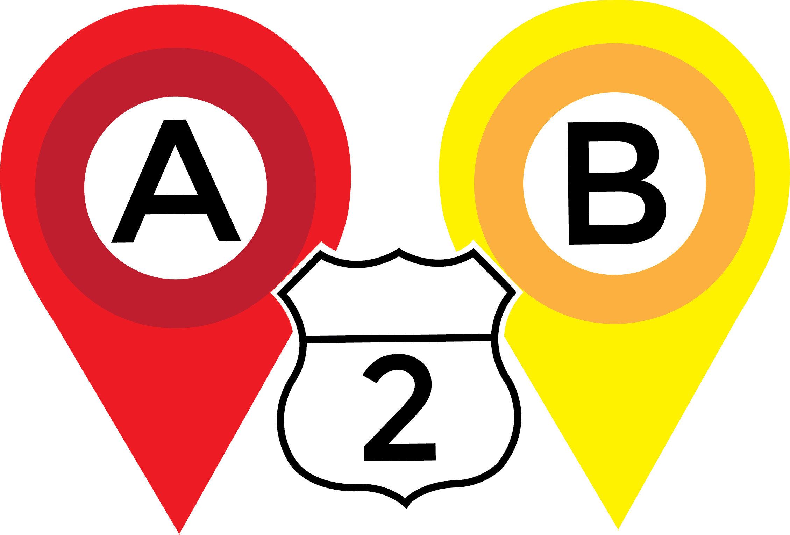

About the Game

A2B was developed at the Girls Who Code Summer Immersion Program 2016 by three girls, Kaylee Kimbrough, Cristina M. Contreras, and Emily Chang over the course of a week and a half.
Originally, A2B was based on the fact that new drivers don’t know how to navigate around the area where they will soon be driving on their own. For example, many are unable to name major roads, highways, and important landmarks. Reliance on GoogleMaps is a distraction while driving.
This idea was later rethought because the sprawl of the Round Rock/Austin area caused such a delay in the game that it took far too long to complete a level. Instead of working to increase geography knowledge in one specific area, the game now allows users to explore cities, monuments, and historical sites around the world. The game could be used in classrooms to demonstrate the real landscapes of places being studied.
A2B implements GoogleMapsAPI and Twitter's Bootstrap.
Thanks for the support of Girls Who Code teachers, Alex, Aish, and Hayley, and GeocodeZip on StackOverflow.